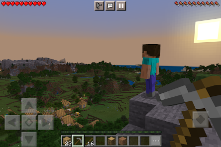
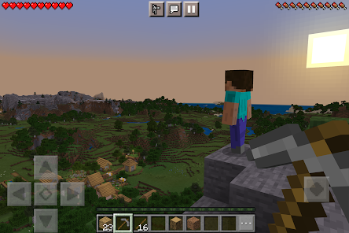
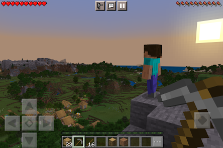

Minecraft es un videojuego de construcción de tipo «mundo abierto» o en inglés sandbox creado originalmente por el sueco Markus Persson (conocido comúnmente como «Notch»), que creó posteriormente Mojang Studios (actualmente parte de Microsoft).1920 Está programado en el lenguaje de programación Java21 para la versión Java Edition y posteriormente desarrollado en C++ para la versión de Bedrock Edition.


 
